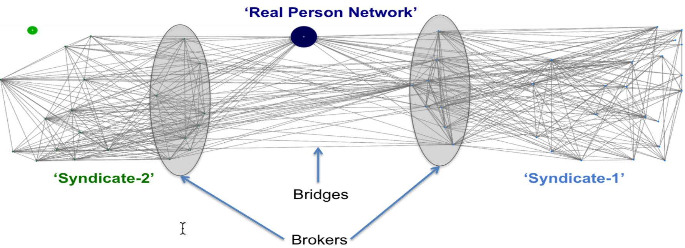
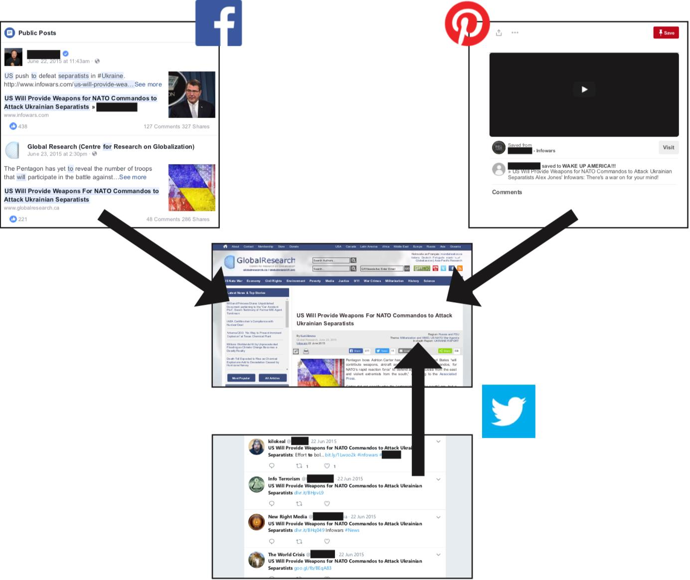
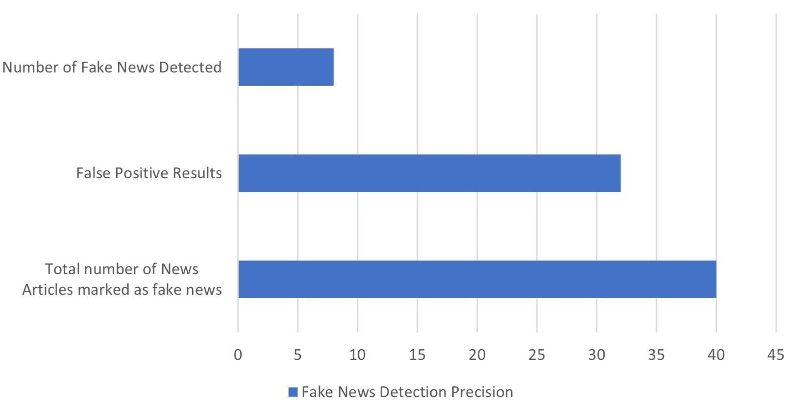

Data publicării: 22.08.2019
Autor articol: Sabin Buraga
Preliminarii
In plin Web social, asistăm la proliferarea unui mare volum de informații – mai mult sau mai puțin cu caracter înșelător, manipulatoriu și/sau defăimător – vehiculate în principal în cadrul aplicațiilor sociale: rețele sociale, platforme de publicare (de pildă, jurnale personale online textuale ori video din categoria blog-urilor sau vlog-urilor), forumuri, situri Web ale unor publicații dubioase, de tip tabloid etc. Aceste informații care dezinformează audiența au fost denumite generic fake news – ceea ce reprezintă diseminarea informațiilor neadevărate (sau parțial adevărate) via diverse medii de comunicare: tipărituri, mass-media, Internet/Web – , iar curentul asociat poartă numele de post-truth (Althuis & Haiden, 2018).
Beneficiile unor astfel de practici sunt cu precădere financiare – în anumite arii, proliferează veritabile piețe negre vizând vânzarea și cumpărarea de entități virtuale precum click-uri (vizite fictive) sau comentarii (e.g., evaluări/recenzii false ale unor produse/servicii), acțiuni de partajare (sharing) sau de apreciere (likes) falsă referitoare la anumite resurse Web de interes. Suplimentar, avantajele pot viza și nivelul politic și/sau strategic (militar), constituind așadar o categorie aparte de atacuri informatice menite a șubrezi atât modelul de afaceri Web, cât și democrația. A se parcurge și studiul lui Bertolin (2017).
În acest context, articolul de față descrie cele mai importante riscuri și categorii de instrumente pentru manipularea unor utilizatori ai rețelelor sociale. De asemenea, se vor expune câteva studii de caz elocvente.
Manipularea online a utilizatorilor
Mijloacele și instrumentele dedicate manipulării online la nivelul rețelelor sociale prezintă o paletă largă de avantaje:
- Relativ dificil de detectat (de către public sau de companiile din domeniul social media) – ca exemplu, multitudinea de instrumente software (roboți) de creștere artificială a expunerii unui utilizator Instagram via acțiuni care nu sunt autentice greu de identificat.
- Facil de înțeles și de utilizat de actorii vizați.
- Oferirea unei suite generoase de facilități și maniere de plată – eventual, pe baza așa-numitului dark Web (Bradbury, 2014).
- Rezultatele obținute au mare potențial financiar/politic, inclusiv în ceea ce privește terorismul digital (Chertoff & Simon, 2015; Weimann, 2016).
În continuare vom descrie succint principalii vectori de manipulare.
Conturile fictive (fake accounts)
Conturile compromise (de pildă, prin tehnici de inginerie socială) sau cele fictive reprezintă o cale de bază pentru a obține acces la o platformă socială (rețea socială, sistem de partajare de resurse, sit de comerț electronic, portal cetățenesc etc.) în vederea plasării de conținut dubios și/sau a realizării unor acțiuni specifice: aprecieri fictive, vizualizări multiple ale unei resurse date (de exemplu, pentru a crește popularitatea unui film sau a unui articol), partajarea de adrese Web în numele utilizatorului, vizitarea unor reclame și multe altele.
Prețul de cumpărare a unor astfel de conturi fictive depinde de:
- tipul de cont (înregistrate automat sau manual în sistem),
- maniera de verificare a contului (telefonic, prin poșta electronică, folosind un jeton special),
- profilul asociat contului (fără niciun conținut, având una sau mai multe imagini credibile ale avatarului, fotografii incluse, plasarea din start a unor articole cu caracter manipulatoriu) + aspectele demografice,
- vechimea contului pe acea platformă – de regulă, oamenii uzual au încredere în utilizatori mai vechi.
Alterarea unor metrici sociale
Folosind instrumente dedicate, anumite metrici de interes (totalul de like-uri, numărul de vizualizări sau download-uri, numărul de replici pentru un mesaj, totalul de utilizatori ce urmăresc un cont etc.) pot fi ajustate în funcție de interese.
De asemenea, se pot crea tendințe artificiale privind un anumit subiect (trending content) în vederea recomandării sau evitării unor resurse.
Altă tehnică manipulatorie este producerea de rezultate false – eventual, pe baza unor vizualizări sau infografice abil dezvoltate pentru a înșela publicul (deceptive data visualization) – vizând preferințele unui grup de persoane pentru un anumit obiect, o entitate politică/legislativă, subiect etc. – date colectate pe baza unui așa-zis chestionar, sondaj de opinie, referendum. Pentru detalii, a se consulta și Pandey et al. (2015).
Tehnicile frecvent folosite se bazează pe existența conturilor de utilizatori fictivi, platforme de recrutare de tip freelancing sau de publicare a unor articole (uzual, proliferând informații false și/sau cu iz propagandistic), interschimb de aprecieri (pentru rețele sociale generale – likes exchanges; pentru cele profesionale – testimonials exchanges), utilizarea de software malițios (malware la nivel de sistem de operare ori browser Web) ce acționează în numele utilizatorului onest pentru a realiza acțiuni indezirabile, potențial dăunătoare.
Instrumente software de automatizare (automation software)
Conform (NATO StratCom, 2018), “industria” de manipulare online oferă suite de instrumente pentru automatizarea unor procese precum:
- Crearea de conturi fictive – a se vedea cele expuse mai sus.
- Colectarea datelor de interes vizând persoanele reale de utilizează o aplicație socială: rețea socială generică precum Facebook sau profesională ca LinkedIn, sistem de partajare online de resurse/opinii/servicii electronice (Instagram, YouTube, GoodReads, Yelp) sau reale (e.g., car sharing), sit Web de comerț electronic de produse/servicii, aplicații colaborative la nivel de Web (de tip wiki sau nu) ori integrate în alte produse software (e.g., instrumentele colaborative oferite de Adobe Photoshop și Microsoft Office), platforme de dezvoltare software (GitHub) sau de jocuri electronice ș.a.m.d.
- Evaluarea calității datelor colectate în vederea realizării unor acțiuni specifice – un exemplu concret este cel al “spălării informațiilor” (laundering information) pentru ca sursele originare ale seturilor de date să fie eliminate, astfel încât proveniența știrilor să nu mai poată fi verificată foarte ușor; alte situații vizează scoaterea din context a unei informații, citarea eronată (misquoting) ori traducerea deliberat greșită a unei declarații, opinii sau legi. Pentru cazuri concrete, a se consulta (NATO StratCom, 2016).
- Execuția în masă a unor acțiuni, în funcție de mai mulți factori de interes: localizarea geografică, profilul și/sau comportamentul utilizatorilor reali, plasarea adecvată de reclame, recomandarea unor resurse în vederea manipulării etc. Ca acțiuni, se pot exemplifica: înscrierea automată a utilizatorului la diverse liste/grupuri, realizarea de comentarii/recenzii/evaluări, plasarea unor informații false, efectuarea de tranzacții neautorizate, vandalizarea conținutului – a se considera vandalizarea articolelor oferite de Wikipedia sau hărților disponibile pe OpenStreetMap –, lansarea unor atacuri cibernetice – de pildă, un caz special de DDoS (Distributed Denial of Service) direcționat asupra unui cont de utilizator legitim (adversar comercial/politic, lider de opinie, persona non grata) pentru ca acesta să fie blocat sau șters – și multe altele.
O categorie importantă de astfel de instrumente automate o constituie roboții conversaționali – subcategorie a agenților software conversaționali – acționând pe baza conturilor de utilizatori fictivi creați în cadrul unei rețele sociale (exemplul tipic este rețeaua americană Twitter, una dintre scenele preferate pentru realizarea de spectacole de manipulare pe scară largă la nivel de Web; ca alternativă, se poate menționa sistemul online rusesc VK). Un asemenea fenomen este denumit robotrolling, iar diverse studii de caz sunt descrise în cadrul rapoartelor NATO StratCom – www.stratcomcoe.org.
De remarcat faptul că fenomenul de trolling (uman sau automat) poate fi folosit pentru a întreține stări emoționale conflictuale (isterie, panică) și a destabiliza o comunitate/populație. Datele privind mesaje distribuite pe Twitter între noiembrie 2017 și iunie 2018 de către utilizatori ruși de tip troll sunt disponibile pe GitHub la github.com/fivethirtyeight/russian-troll-tweets/. De asemenea, la nivel de Reddit au fost descoperite peste 900 de conturi suspecte – raportul public poate fi consultat la github.com/ALCC01/reddit-suspicious-accounts.
Mai mult decât atât, roboții nu acționează solitar, ci sunt constituiți în rețele de roboți (botnets) activând în cadrul unei ecosistem social media (Ferrara et al., 2016). Comportamentul malign al acestor roboți interdependenți a devenit tot mai sofisticat, astfel încât să devină tot mai dificil de detectat, dar să aibă un impact semnificativ în ceea ce privește manipularea utilizatorilor umani (Agarwal et al., 2017). Drept exemplu, în figura de mai jos se poate remarca maniera în care rețeaua de cunoscuți ai unei persoane reale este conectată via o “punte” de legături (bridge) la roboți intermediari (broker) care-și coordonează mesajele propagandistice emise de grupuri de roboți (syndicate1, syndicate2) în funcție de profilul sau interesele acelei persoane reale. “Sindicatele” constituite de roboți nu prezintă nicio structură ierarhică, neavând vreun nod central.

Studii de caz
Manipularea propagandistică având caracter terorist
O primă exemplificare se referă la terorism realizat prin mijloace de manipulare online de către DAESH, grup militant jihadist regăsit sub denumit de Statul Islamic – informații de interes la www.cfr.org/backgrounder/islamic-state. Propaganda și dezinformarea practicate de DAESH se bazează în principal pe răspândirea de mesaje via Twitter, folosind diverse vulnerabilități ale rețelelor sociale pentru a eluda verificarea, detectarea, suspendarea și ștergerea conturilor de utilizatori malițioși.
Studiile efectuate au relevat existența unei substanțiale infrastructuri umane dedicate proliferării de mesaje cu caracter terorist, inclusiv privind combaterea de puncte de vedere adverse. S-a constatat faptul că mesajele plasate erau redactate în principal în limbile engleză, arabă, germană și utilizau un număr de situri Web necontrolate și permițând un grad mare de anonimitate – de genul JustPaste.It sau Imgur –, pentru a expune resursele (imagini, articole, reportaje video, știri) menite a manipula utilizatorii. Comunicatele de presă recurgeau la redactări profesioniste, de calitate, însoțite de muzică islamică și efecte speciale, țintind în special audiența tânără pentru a recruta facil prozeliți. Pentru amănunte, a se studia raportul (Shaheen, 2015).
Detectarea dezinformărilor realizate prin intermediul blog-urilor
Al doilea studiu vizează folosirea platformelor dedicate însemnărilor personale sau la nivel de grup (blogging) pentru a conduce campanii de dezinformare publică. Deoarece aplicațiile Web de tip blog sunt gratuite și ușor de utilizat, iar mediul de publicare online este unul nepretențios, informal, fără a necesita verificarea afirmațiilor expuse, nu există foarte multe obstacole pentru a propaga orice idee, de către oricine, favorizând părerile de nișă, partizane, chiar extremiste.
Articolul (Agarwal & Bandeli, 2018) identifică o serie de aspecte de interes referitoare la verificarea unor blog-uri suspecte:
- Examinarea secțiunii privind datele de contact și verificarea autorilor.
- Parcurgerea efectivă a conținutului propriu-zis al unui articol, nu doar a titlului (headline) și/sau a rezumatului.
- Analizarea tuturor adreselor Web (URL-uri) specifice resurselor externe referite sau a imaginilor incluse, plus standardele de redactare.
- Verificarea manuală ori (semi-)automată a credibilității celor descrise de material via situri Web dedicate (fact-checking) precum FactCheck.org, Politifact.com, Snopes.com.
- Regăsirea acelorași informații și proveniența acestora pe baza unui motor major de căutare.
- Determinarea faptului dacă articolul nu a fost deja publicat în trecut (“reîncălzirea ciorbei”) – reutilizarea unor afirmații în alt context și/sau alterarea percepției publice asupra unui fenomen anterior.
- Verificarea faptului că articolul e catalogat ca fiind controversat ori deranjant (disturbing); de obicei, dezinformările “atrag” astfel de clasificări.
- Determinarea existenței comentariilor, aprecierilor, replicilor și proveniența acestora.
Un exemplu de dezinformare folosind mai multe aplicații Web sociale (un blog, rețelele sociale Facebook și Twitter, plus partajarea de resurse via Pinterest) este ilustrat de imaginea următoare.

Analiza de știri disponibile online via tehnologiile Web-ului semantic
Ultimul studiu de caz recurge la tehnologiile Web-ului semantic pentru analiza știrilor emise de diverse surse online în vederea determinării gradului de adevăr. Soluția descrisă mai jos face parte din lucrarea de disertație prezentată în sesiunea iulie 2019 de către absolventul Cornel-Paul Acatrinei coordonat de Dr. Sabin-Corneliu Buraga.
Pentru a verifica proveniența știrilor, mai întâi se adoptă diverse modele conceptuale create de BBC pentru a descrie conținuturile disponibile online (ontologia Creative Work) și relatări jurnalistice (Storyline Ontology). Extragerea de informații se bazează în principal pe procesarea fluxurilor de știri disponibile în formatul RSS (Really Simple Syndication) și stocarea într-o formă structurată via modelul de triple RDF (Resource Description Framework).
Sistemul dezvoltat ia în considerație surse ca Al Jazeera, BBC, Business Insider, Google News, New York Times etc. Analizarea propriu-zisă a datelor – păstrate persistent în cadrul sistemului Dydra și interogate cu SPARQL – se bazează pe diverse API-uri publice precum TrustServista.
Diagrama următoare figurează precizia detecției știrilor false de către aplicația implementată.

Detalii tehnice și alte aspecte sunt descrise de teza (Acatrinei, 2019).
Referințe bibliografice
- Acatrinei, C., “Using Semantic Web Technologies to Analyze Online News”, Master Thesis, UAIC, 2019.
- Agarwal, N., Al-khateeb, S., Galeano, R., Goolsby, R., “Examining the Use of Botnets and Their Evolution in Propaganda Dissemination”, Defence Strategic Communications, Volume 2, NATO Strategic Communications Centre of Excellence, 2017.
- Agarwal, N., Bandeli, K., “Examining Strategic Integration of Social Media Platforms in Disinformation Campaign Coordination”, Defence Strategic Communications, Volume 4, NATO Strategic Communications Centre of Excellence, 2018.
- Althuis, J., Haiden, L. (Editors), Fake News: A Roadmap, NATO Strategic Communications Centre of Excellence (StratCom COE) & The King’s Centre for Strategic Communications, King’s College London, 2018.
- Bertolin, G. (Editor), Digital Hydra: Security Implications of False Information Online, NATO Strategic Communications Centre of Excellence, 2017: ISBN 978-9934-564-18-5.
- Bradbury, D., “Unveiling the Dark Web”, Network Security, 2014 (4), 14–17, Elsevier, 2014.
- Chertoff, M., Simon, T., “The Impact of the Dark Web on Internet Governance and Cyber Security”, Centre for International Governance Innovation and the Royal Institute for International Affairs, Global Commission on Internet Governance, 2015: http://www.cigionline.org/sites/default/files/gcig_paper_no6.pdf
- Ferrara, E. et al., “The Rise of Social Bots”, Communications of the ACM, 59 (7), 96–104, ACM Press, 2016.
- Pandey, A. V., Rall, K., Satterthwaite, M. L., Nov, O., Bertini, E., “How Deceptive Are Deceptive Visualizations?: An Empirical Analysis Of Common Distortion Techniques”, Proceedings of the 33rd Annual ACM Conference on Human Factors in Computing Systems (ACM CHI), 1469–1478, ACM Press, 2015.
- Shaheen, J., “Network of Terror: How DAESH Uses Adaptive Social Networks To Spread Its Message”, NATO StratCom COE, 2015.
- Weimann, G., “Terrorist Migration to the Dark Web”, Perspectives on Terrorism, 10 (3), 2016.
- * * *, Disinformation in Sweden, NATO StratCom, 2016: http://www.stratcomcoe.org/hybrid-threats-disinformation-sweden
- * * *, Reducing Inauthentic Activity on Instagram, Instagram, 2018: http://instagram-press.com/blog/2018/11/19/reducing-inauthentic-activity-on-instagram/
- * * *, The Black Market for Social Media Manipulation, NATO StratCom COE & Singularex, 2018: http://www.stratcomcoe.org/black-market-social-media-manipulation
- * * *, TrustServista API, 2019: www.trustservista.com/trustservista-api/